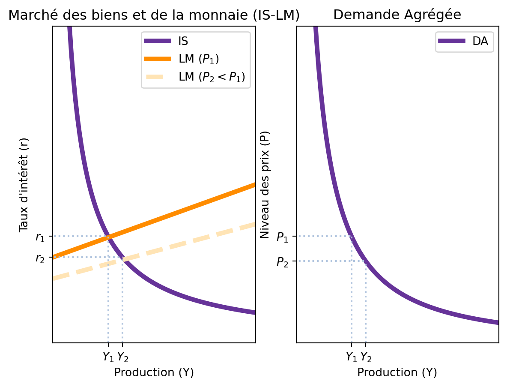
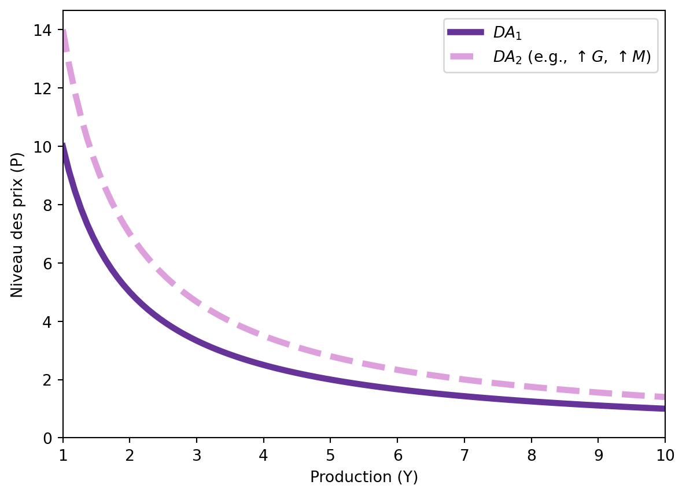
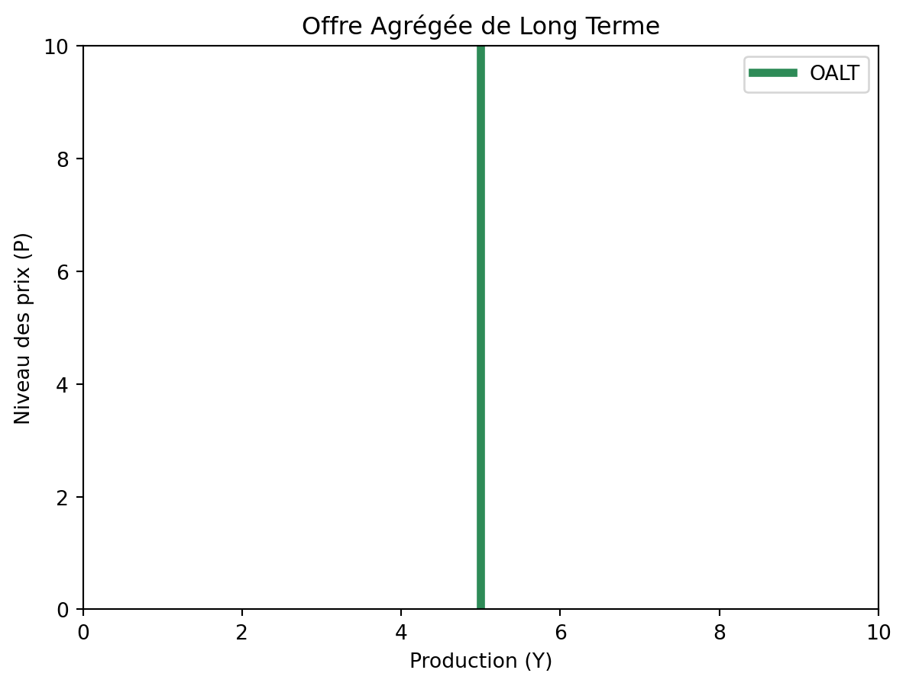
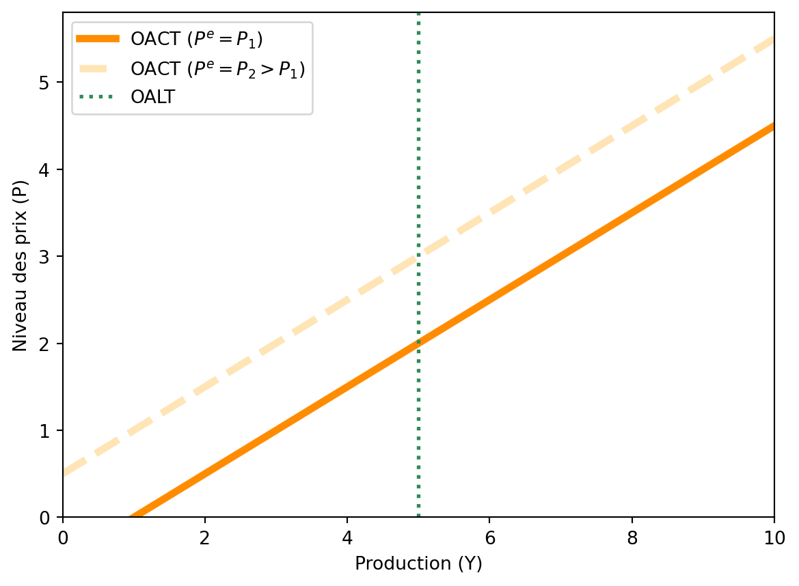
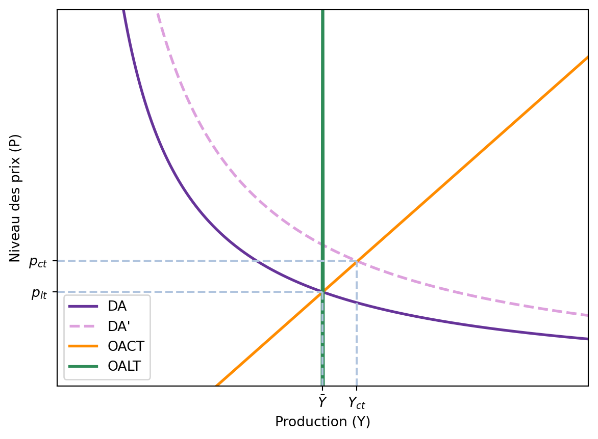
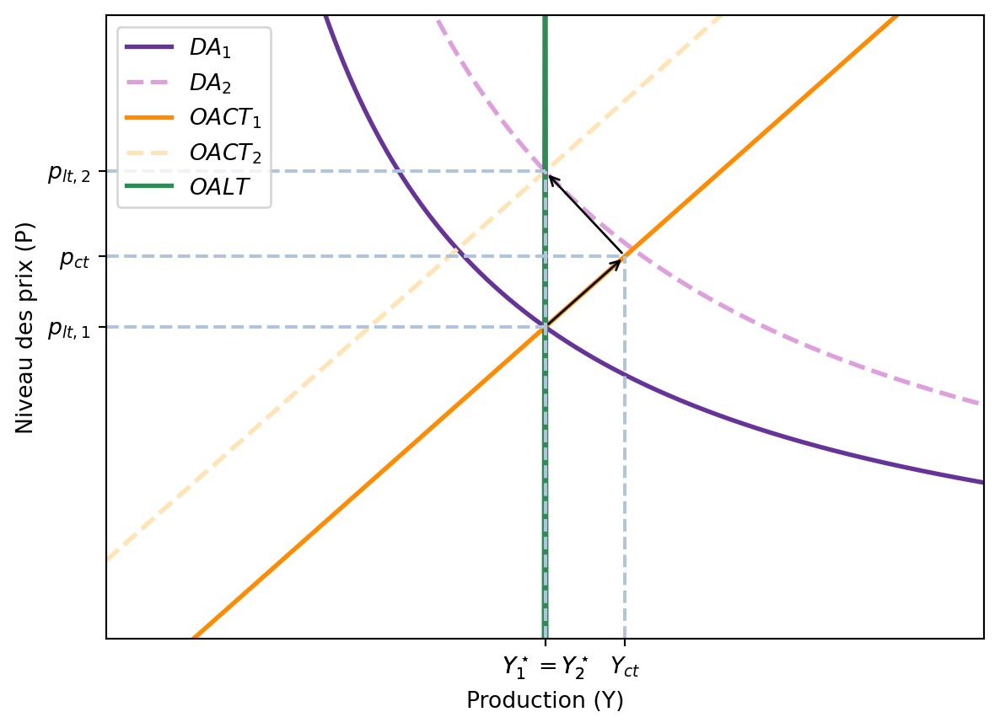

7 Le modèle Offre Agrégée - Demande Agrégée
L’inflation est toujours et partout un phénomène monétaire en ce sens qu’elle est et ne peut être générée que par une augmentation plus rapide de la quantité de monnaie que de la production.
– Milton Friedman
Jusqu’à présent, notre analyse avec le modèle IS-LM reposait sur une hypothèse cruciale : la rigidité des prix à court terme. Cette hypothèse nous a permis de comprendre comment les chocs de demande et les politiques économiques pouvaient faire fluctuer la production et l’emploi. Cependant, pour analyser des phénomènes comme l’inflation et pour comprendre comment l’économie retourne à son potentiel de long terme, nous devons relâcher cette hypothèse.
Le modèle Offre Agrégée - Demande Agrégée (OA-DA), ou AS-AD en anglais, est l’outil macroéconomique standard pour étudier les fluctuations de l’économie dans son ensemble. Il permet de déterminer simultanément le niveau de production (le PIB réel) et le niveau général des prix.
Ce modèle se construit autour de deux courbes principales :
- La courbe de Demande Agrégée (DA) : Elle décrit la relation entre le niveau général des prix et la quantité de biens et services que les ménages, les entreprises, le gouvernement et les clients étrangers souhaitent acheter. Elle est dérivée de l’équilibre du modèle IS-LM.
- La courbe d’Offre Agrégée (OA) : Elle décrit la relation entre le niveau général des prix et la quantité de biens et services que les entreprises choisissent de produire et de vendre. Il est crucial de distinguer l’offre de court terme (OACT) de l’offre de long terme (OALT).
Ensemble, ces deux courbes nous permettent d’analyser comment les politiques budgétaires et monétaires, ainsi que d’autres chocs, affectent l’économie, non seulement en termes de production mais aussi en termes d’inflation.
7.1 La Courbe de Demande Agrégée (DA)
La courbe de Demande Agrégée représente l’ensemble des combinaisons du niveau de production \((Y)\) et du niveau général des prix \((P)\) pour lesquelles le marché des biens et services (IS) et le marché de la monnaie (LM) sont simultanément en équilibre.
7.1.1 Dérivation de la courbe DA à partir du modèle IS-LM
Rappelons les équations du modèle IS-LM :
- Courbe IS : \(Y = C(Y-T) + I(r) + G\)
- Courbe LM : \(\frac{M}{P} = L(r, Y)\)
La variable clé qui relie le modèle IS-LM à la courbe de demande agrégée est le niveau des prix (P). Dans le modèle IS-LM, nous le supposions fixe. Maintenant, nous allons analyser comment une variation de \(P\) affecte l’équilibre IS-LM, et donc le niveau de production \(Y\).
Imaginez une baisse du niveau général des prix, de \(P_1\) à \(P_2\). 1. Effet sur le marché de la monnaie : La baisse de \(P\) augmente l’offre d’encaisses monétaires réelles \((\frac{M}{P})\). Pour un niveau de production donné, l’offre de monnaie réelle devient supérieure à la demande. 2. Ajustement de la courbe LM : Pour rétablir l’équilibre sur le marché monétaire, le taux d’intérêt \((r)\) doit baisser, ce qui augmente la demande de monnaie. Graphiquement, cette augmentation de l’offre de monnaie réelle déplace la courbe LM vers la droite (ou vers le bas). 3. Nouvel équilibre : Le nouvel équilibre IS-LM se situe à un point où le taux d’intérêt est plus bas et le niveau de production est plus élevé.
Ainsi, une baisse du niveau des prix conduit à une augmentation de la production d’équilibre. Cette relation négative entre le niveau des prix \((P)\) et la production \((Y)\) définit la courbe de Demande Agrégée.
7.1.2 Pourquoi la courbe de Demande Agrégée est-elle décroissante ?
La relation inverse entre \(P\) et \(Y\) s’explique principalement par l’effet d’encaisses réelles de Keynes que nous venons de décrire : 1. Une baisse de \(P\) augmente \(\frac{M}{P}\). 2. La courbe LM se déplace vers la droite. 3. Le taux d’intérêt \(r\) diminue. 4. La baisse de \(r\) stimule l’investissement \(I(r)\). 5. La production d’équilibre \(Y\) augmente.
7.1.3 Déplacements de la courbe de Demande Agrégée
Tout facteur autre que le niveau des prix \((P)\) qui déplace la courbe IS ou la courbe LM entraînera un déplacement de la courbe DA.
- Politique budgétaire expansionniste : Une augmentation des dépenses publiques \((G)\) ou une baisse des impôts \((T)\) déplace la courbe IS vers la droite. Pour un niveau de prix donné, cela conduit à une production plus élevée. La courbe DA se déplace donc vers la droite.
- Politique monétaire expansionniste : Une augmentation de la masse monétaire nominale \((M)\) déplace la courbe LM vers la droite. Pour un niveau de prix donné, cela conduit à une production plus élevée. La courbe DA se déplace donc également vers la droite.
Inversement, des politiques restrictives (baisse de \(G\), hausse de \(T\), baisse de \(M\)) déplaceront la courbe DA vers la gauche.

7.2 La Courbe d’Offre Agrégée (OA)
La courbe d’Offre Agrégée (OA) décrit la relation entre le niveau général des prix et la quantité de biens et services que les entreprises sont prêtes à produire. Ici, la distinction entre le court terme et le long terme est fondamentale.
7.2.1 L’Offre Agrégée de Long Terme (OALT)
À long terme, la capacité de production d’une économie dépend de ses facteurs de production (capital \(K\), travail \(L\)) et de la technologie disponible, représentée par la fonction de production \(F\). Le niveau de production de long terme, appelé production potentielle ou niveau de production naturel \((\bar{Y})\), est le niveau de production atteint lorsque le chômage est à son taux naturel.
\[ Y = \bar{Y} = F(\bar{K}, \bar{L}) \]
À long terme, le niveau des prix n’affecte pas la capacité de production. Si tous les prix (y compris les salaires) doublent, les incitations à produire restent les mêmes. Par conséquent, la courbe d’offre agrégée de long terme (OALT) est verticale au niveau de \(\bar{Y}\).

Tout ce qui modifie le potentiel de production de l’économie déplacera la courbe OALT. Cela inclut les changements dans le stock de capital, la taille de la population active, les découvertes technologiques, ou les politiques structurelles qui affectent l’efficacité du marché du travail.
7.2.2 L’Offre Agrégée de Court Terme (OACT)
À court terme, de nombreux prix sont “rigides” ou “collants” (sticky). L’hypothèse la plus courante est celle de la rigidité des salaires nominaux ou des prix. Si le niveau général des prix augmente de manière inattendue, mais que les salaires ou les prix de certains biens ne s’ajustent pas immédiatement, les entreprises ont une incitation à augmenter leur production.
Le modèle des prix rigides (Sticky-Price Model) : * Certaines entreprises ajustent leurs prix rapidement, d’autres non (à cause des “coûts de menu”). * Si le niveau général des prix \((P)\) augmente, les entreprises à prix flexibles augmentent leurs prix. * Les entreprises à prix rigides se retrouvent avec des prix relatifs plus bas, ce qui stimule la demande pour leurs produits. Elles répondent en augmentant leur production. * Résultat : une augmentation de \(P\) conduit à une augmentation de \(Y\).
La courbe d’offre agrégée de court terme (OACT) est donc croissante. L’équation de l’OACT est souvent représentée comme :
\[ Y = \bar{Y} + \alpha (P - P^e) \]
où :
- \(Y\) est la production.
- \(\bar{Y}\) est la production potentielle.
- \(P\) est le niveau des prix effectif.
- \(P^e\) est le niveau des prix anticipé.
- \(\alpha > 0\) mesure la sensibilité de la production aux surprises de prix.
Cette équation montre que la production dévie de son niveau naturel lorsque le niveau des prix observé diffère du niveau des prix anticipé. La courbe OACT est tracée pour un niveau de prix anticipé \((P^e)\) donné. Si les anticipations de prix \((P^e)\) augmentent, la courbe OACT se déplace vers le haut (vers la gauche).

7.3 L’Équilibre Macroéconomique
L’équilibre de l’économie se trouve à l’intersection des courbes d’offre et de demande agrégées.
7.3.1 Équilibre de long terme
L’équilibre de long terme est atteint lorsque la courbe de demande agrégée (DA) croise la courbe d’offre agrégée de long terme (OALT). À ce point, la production est à son niveau naturel \((\bar{Y})\), et le chômage est à son taux naturel. La courbe d’offre de court terme (OACT) passe également par ce point, car à long terme, les anticipations de prix se sont ajustées au niveau des prix effectif \((P = P^e)\).
7.3.2 Équilibre de court terme
L’équilibre de court terme se situe à l’intersection de la courbe de demande agrégée (DA) et de la courbe d’offre agrégée de court terme (OACT). À ce point, l’économie peut se trouver en dehors de son potentiel de long terme. * Si \(Y > \bar{Y}\), l’économie est en surchauffe (boom économique). * Si \(Y < \bar{Y}\), l’économie est en récession.

7.3.3 Le mécanisme d’ajustement vers le long terme
Supposons que l’économie parte d’un équilibre de long terme (point A) et qu’une politique monétaire expansionniste déplace la courbe DA vers la droite (DA’). 1. Court terme : L’économie se déplace le long de la courbe OACT initiale vers un nouvel équilibre de court terme (point B). La production augmente \((Y > \bar{Y})\) et le niveau des prix augmente. L’économie est en surchauffe. 2. Ajustement : Comme la production est supérieure à son niveau potentiel, le marché du travail est tendu et les salaires commencent à augmenter. Les entreprises font face à des coûts de production plus élevés. Cela conduit à une révision à la hausse des anticipations de prix \((P^e)\). 3. Retour au long terme : L’augmentation de \(P^e\) déplace la courbe OACT vers le haut (vers la gauche). Ce processus continue tant que \(Y > \bar{Y}\). La courbe OACT se déplace jusqu’à ce que l’économie atteigne un nouvel équilibre de long terme (point C), où la nouvelle courbe DA’ croise la courbe OALT.
Au final, la production retourne à son niveau naturel \(\bar{Y}\), mais le niveau général des prix est durablement plus élevé. Cela illustre la neutralité de la monnaie à long terme : les changements dans la masse monétaire n’affectent pas les variables réelles (comme la production) à long terme, mais seulement les variables nominales (comme le niveau des prix).

7.4 Conclusion
Le modèle OA-DA est une synthèse puissante de la macroéconomie. Il intègre les idées keynésiennes sur l’importance de la demande agrégée à court terme avec la vision classique de la primauté de l’offre à long terme. Il nous permet de comprendre comment l’économie réagit aux chocs et aux politiques, en distinguant les effets immédiats sur la production et l’emploi des effets à long terme sur le niveau des prix et l’inflation. C’est un outil essentiel pour analyser les grands débats de politique économique, de la lutte contre les récessions à la maîtrise de l’inflation.